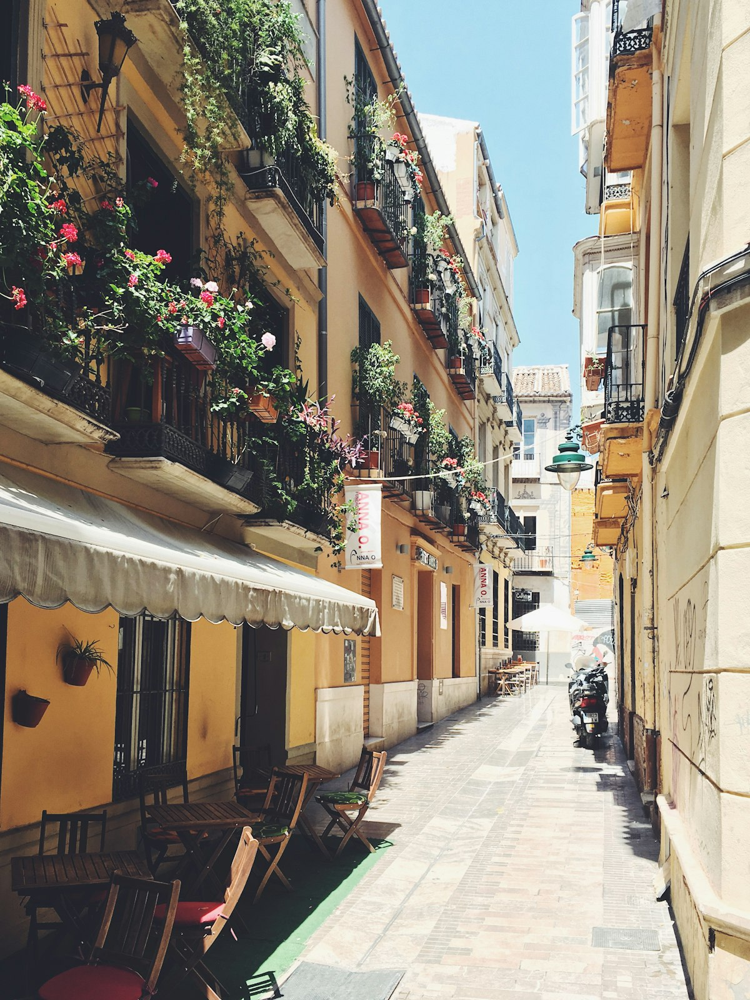
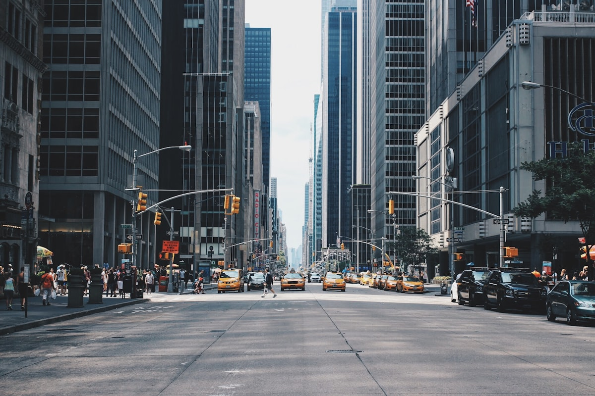

Visível
Paisagem
É a unidade visível do arranjo espacial. Tudo o que nossa visão alcança: o conjunto de elementos bionaturais e culturais produzidos pelo trabalho e emoção.

A Geografia é a ciência que estuda a organização do espaço pelo Homem, focando nas relações sociais e com a natureza. Não é apenas descrever o mundo; é entender como o poder, a cultura e o trabalho transformam a "primeira natureza" no que chamamos de Espaço Geográfico.

A síntese da ação humana sobre a natureza.
É a unidade visível do arranjo espacial. Tudo o que nossa visão alcança: o conjunto de elementos bionaturais e culturais produzidos pelo trabalho e emoção.
Espaço definido por relações de poder. Vai além da física: é a divisa social e política de um grupo que se apropria de uma parcela do espaço.
A porção do espaço apropriável para a vida cotidiana. É onde criamos identidade, vínculos afetivos e reconhecemos nossa existência.

Relação matemática entre a Realidade e o Mapa (Cartográfica) ou o nível de análise dos elementos do Espaço (Geográfica).
A Geografia se divide entre Física (estudo natural: relevo, clima, hidrografia) e Humana (estudo social: economia, população, política), mas ambas são indissociáveis.

A cartografia é a linguagem da geografia. Compreender projeções e escalas é fundamental para não sermos enganados pelas representações do espaço.
Ideal para mapas-múndi e navegação.
Focada em latitudes médias e continentes.
Ponto de vista polar ou geopolítico.
Periodização do Espaço Geográfico (Milton Santos)
1. Meio Natural: O homem utilizava a natureza sem grandes transformações estruturais, dependendo majoritariamente das condições climáticas e biológicas e das dádivas do meio físico.
2. Meio Técnico: Compreende a emergência do espaço mecanizado através das Revoluções Industriais (substituição da força motriz orgânica por matrizes de energia como carvão e petróleo).
3. Meio Técnico-Científico-Informacional: A época contemporânea, caracterizada pela forte influência da ciência e da informação, onipresença das redes telecomunicacionais, ciberespaço e globalização.
Numa paisagem podem ser observados edifícios, áreas cultivadas, ruas, ferrovias, igrejas, aeroportos, veículos, enfim, vários objetos construídos e modificados pela sociedade humana ao longo da História, além das formas naturais (animais e plantas em geral) e as próprias pessoas. A paisagem geográfica é aquilo que se vê (o conjunto dos elementos materiais) e se percebe (sons, cheiros, movimentos) num determinado momento, num certo trecho do espaço.
O geógrafo Milton Santos definiu paisagem como "o domínio do visível, aquilo que a vista abarca. Não é formada apenas de volumes, mas também de cores, movimentos, odores, sons, etc. [...] A dimensão da paisagem é a dimensão da percepção, o que chega aos sentidos". (Metamorfose do espaço habitado. 4. ed. São Paulo: Hucitec, 1996, p. 61 e 62).
A simples observação da paisagem não nos traz explicações sobre as funções de cada uma das edificações, a organização do sistema de produção, as tecnologias empregadas, as relações comerciais, as relações de trabalho, a organização política e social, etc.
Ao considerarmos os elementos materiais, as funções das edificações, as sociedades, as relações e as estruturas econômicas sociais e políticas, estamos tratando do espaço geográfico e não apenas da paisagem. O espaço geográfico é, portanto, o conjunto de elementos materiais (naturais e construídos) sob permanente ação da sociedade, que o modifica e o organiza por meio do trabalho e das diversas relações econômicas, sociais e políticas.
A estrutura (paisagem) e o uso do espaço, além dos impactos nele produzidos, são temas interligados da Geografia. A análise desses elementos permite entender como os grupos sociais operam na paisagem, desenvolvem relações de trabalho e interagem entre si, com outros grupos e com o ambiente.
Fonte: LUCCI, Elian Alabi et al. Território e sociedade no mundo globalizado: geografia geral e do Brasil. São Paulo: Saraiva, 2005. p. 12.
Reprodução espacial e estruturas de relação Se observarmos uma quadra de futebol de salão, notamos que o arranjo do terreno reproduz as regras desse esporte. Basta aproveitarmos a mesma quadra e nela sobrepormos o arranjo espacial do futebol de salão, do vôlei, do basquete ou do handebol uns sobre os outros, cada qual com "leis" próprias, para notarmos que o arranjo espacial de um diferirá do outro no terreno. Diferirá porque o arranjo espacial ao se confundir com as regras do jogo, segue as regras de cada um dos esportes citados. Se fossem as mesmas as "leis" para todos eles, o arranjo seria um só.
Naturalmente que a transposição do exemplo da quadra de esportes para o que ocorre com a formação espacial implica alguns cuidados, como de resto deve acontecer com as analogias. Não se trata de uma diferença de escalas, apenas, mas de natureza qualitativamente distinta entre a quadra e a formação espacial, embora possamos falar da quadra como de uma formação espacial. Mas as regras do esporte são regras simples e quase mecânicas, com intuitos de repetições de jogadas de reduzidas margens de variações. As leis de uma formação econômico-social são de uma ordem de grande complexidade, porque se referem a movimentos determinados historicamente. Confundindo-se com estruturas complexas enquadradas no tempo histórico, e não no tempo sideral como o da quadra, a formação espacial tem uma estrutura complexa e submetida ao tempo histórico.
Fonte: MOREIRA, Ruy. Pensar e ser em geografia: ensaios de história, epistemologia e ontologia do espaço geográfico. São Paulo: Ed. Contexto, 2007. p. 70.
Importância de cada escala geográfica Até por volta dos anos 1980, considerava-se a escala dos Estados nacionais como a mais importante, pois nela existem as fronteiras entre os territórios nacionais, nos quais prevalece a soberania do poder público, isto é, do Estado. Geralmente a maior parte da política e a economia são determinadas por esta escala nacional: é aí que se definem a moeda e o sistema financeiro do país, as políticas de desenvolvimento, de educação, de saúde, de previdência, etc.
Com o avanço da globalização ou interdependência cada vez maior entre todos os povos e economias, ocorreu uma intensa valorização da escala global em virtude da expansão dos acordos, dos problemas comuns da humanidade (comércio mundial, tecnologias de informação, meio ambiente, máfias, narcotráfico, terrorismo etc.) e, principalmente, de uma crescente importância do mercado e do sistema financeiro internacionais e das instituições supranacionais, como a ONU, a União Européia e outras.
Também a escala local vem sendo cada vez mais valorizada, na medida em que vem ocorrendo um relativo enfraquecimento das fronteiras nacionais, com a crescente abertura comercial e um lento avanço da democracia em várias partes do Geografia globo. O enfraquecimento das fronteiras é um fato que permite que as localidades tenham maior autonomia em comparação com o passado. O avanço da democracia é algo que favorece a descentralização das decisões, e estas, em alguns casos, deixam de ser tomadas na escala nacional, pelo governo do país, e passam a ser definidas na escala local, pela comunidade ou pelo governo do município.
Fonte: VESENTINI, José Willian. Sociedade & espaço: geografia geral e do Brasil. São Paulo: Ática, 2005. p. 14.
Sugestões de Vídeos NÃO por acaso. Brasil, 2007. Direção: Phillipe Barcinski. Brasil, 2007. Duração: 90 min DIÁRIO de motocicleta. Direção: Walter Salles. Estados Unidos, 2004. Duração: 126 min.
DENISE está chamando. Direção: Hal Salwen. Canadá, 1995. Duração: 80 min.
NOAM Chomsky e a mídia: o consenso fabricado. Direção: Marck Achbar e Peters Wintonick. Austrália, 1992. Duração: 170 min.